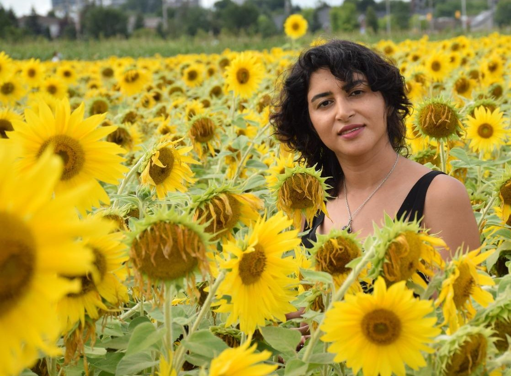

About Me
My name is Shahrzad. I am originally from Iran. I was born in 2 nd April 1984 and I lived in a beautiful corneal Island that called Kish that is located in the middle of Persian Gulf. I studied French literature as a MA degree but all of my life I had passionate about art and what is related to art. last year I came to Canada with my family as a doctorate student but I changed my mind to follow this powerful and brawny thing in my life: Art.
I chose program of Interactive media design in Algonquin college in Ottawa. I would like to improve all my skills that will be offered in IMD program, I am eager in learning and developing my area of knowledge about digital design and web design and also, I hope to become more familiar with perspective of each carrier to find my appropriate future field.
"Spend time thinking of what you want rather than what you don't want."Romans.S
These are my hobbies
- painting
- Playing Tennis
- swimming